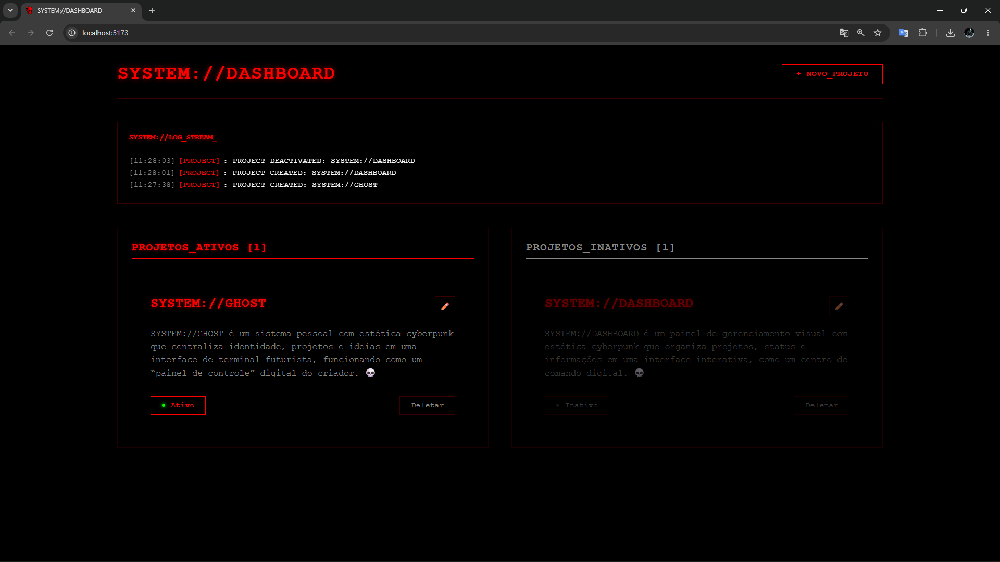
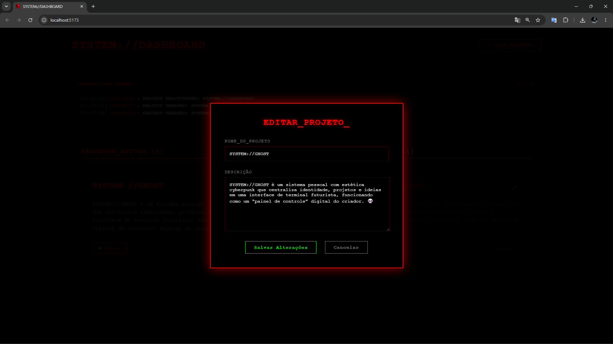
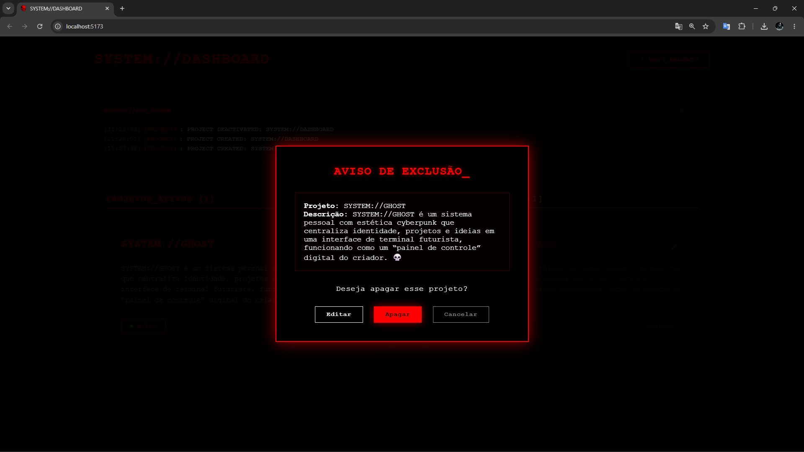

SYSTEM://DASHBOARD was designed as a centralized management environment responsible for organizing, monitoring and presenting project information inside a unified interface.
The platform allows active and archived projects to be managed efficiently through a structured dashboard system.
Unlike conventional dashboards focused solely on statistics, this project combines administration tools with a distinctive cyberpunk visual identity.
The system is intended to evolve continuously, expanding alongside future projects and integrations within the SYSTEM://GHOST network.
SYSTEM://DASHBOARD follows a client-server architecture designed around modern software engineering principles.
The front-end is built with React, providing a modular component-based structure capable of scaling with future requirements.
Spring Boot powers the backend layer, handling business logic, API communication and application services.
MySQL is responsible for data persistence, ensuring reliable storage and retrieval of project information.
The architecture was designed with future expansion in mind, supporting analytics, authentication systems and advanced management features.
The platform currently includes the core dashboard interface, backend services and database integration required for project management operations.
Core functionalities such as project tracking, status monitoring and API communication are already operational.
Current development efforts focus on usability improvements, interface refinement and feature expansion.
Future versions will introduce authentication, advanced analytics, project metrics and deeper integration with the SYSTEM://GHOST ecosystem.
The primary objective of this project is to strengthen my full stack development skills through the creation of a complete management platform.
It serves as a practical environment for learning software architecture, database integration, API development and modern frontend engineering.
Every new feature contributes directly to improving both technical knowledge and the overall quality of the platform.
The long-term goal is to transform SYSTEM://DASHBOARD into a fully operational management environment capable of supporting real-world projects and workflows.

Main dashboard interface
Project Editing Terminal
Project Termination Interface